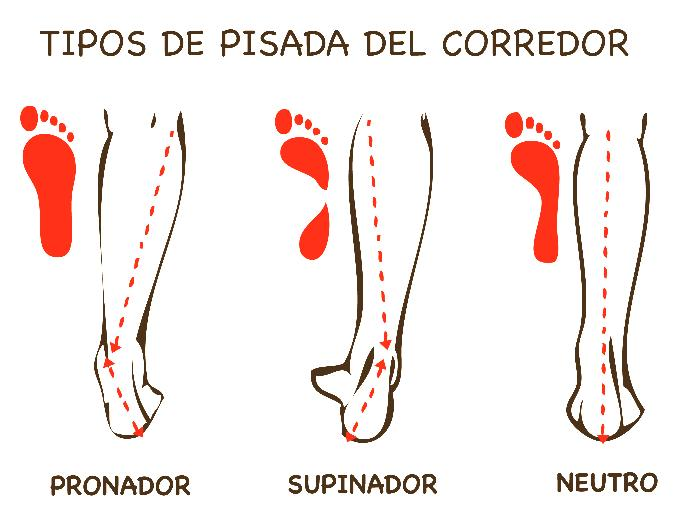
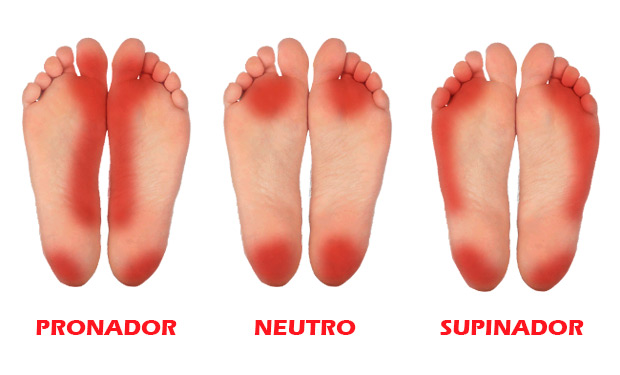

La pisada de un corredor puede ser pronadora, supinadora o neutra. Cada tipo de pisada tiene unas características propias y unas consecuencias en nuestra forma de correr.
Pisada pronadora
Gran parte de los corredores tienen este tipo de pisada. Una pisada pronadora significa que, al impactar contra el suelo, el tobillo se inclina hacia el interior del pie. Por lo general el primer contacto con el pie en el suelo suele ser con el exterior del pie pero luego este cede para ir amortiguando poco a poco hacia el interior.
Cuando corremos impactamos muchas veces contra el suelo y si pronamos provocamos que al girar el tobillo hacia dentro la tibia se torsiona para compensar y esto puede provocar dolor por sobrecarga en rodillas o caderas.
El grado de pronación puede determinar que tengamos mayor o menor problemas con las lesiones.
Muchas veces el exceso de pronación se debe más a una debilidad en ligamentos y músculos de tobillo que a una característica morfológica. Por eso antes de ponernos a buscar zapatillas específicas o plantillas intentemos fortalecer bien los tobillos realizando ejercicios con banda elástica o ejercicios de equilibrio, propiocepción y hacer un trabajo correcto de técnica de carrera.
Pisada supinadora
Al contrario que el pronador el supinador inclina el tobillo hacia el exterior del pie. Los supinadores suelen ser personas con un arco plantar muy pronunciado y poco flexible.
Al igual que con la pronación puede haber varios grados siendo los grados más pronunciados los que nos pueden dar mayores problemas. Un corredor con una supinación excesiva puede notar molestia a nivel de sóleo o de la musculatura peronea. Igualmente pueden aparecer dolores en las caras externas de la rodilla.
Los corredores que supinan en exceso también tienen mayor predisposición a sufrir esguinces. Elegir un tipo de calzado con el que el supinador se sienta cómodo y su pisada mejore es importante al igual que visitar a un podólogo para que determine si es necesario el uso de plantillas.
En este caso resulta útil realizar ejercicios de estiramiento de sóleo, gemelos y peroneos y rodar una pelota de tenis con la planta del pie para flexibilizar el arco plantar.
Pisada neutra
En este tipo de pisada el tobillo no se inclina apenas hacia ningún lado. Como mucho, el ángulo entre pantorrilla y talón es de 1-3 grados algo mínimo y asumible. Por tanto, no suele haber mucho problema de lesiones con este tipo de pisada. Aún así, se recomienda seguir los consejos mencionados anteriormente con respecto a cómo correr de manera saludable.
Siempre se recomienda acudir a un especialista de la salud después de un esfuerzo importante o cuando exista algún dolor con el fin de evitar lesiones y/o sobrecargas.

Imagen extraída de fisiohm

Imagen extraída de StreetProRunning